Visual Design Project
This is a visual design study that I created with the goal of implementing different design concepts to portray a specific feeling in the design.
For this design, the feelings that I wanted to portray were calm and friendly.
On this page, I will go through the design decisions that I made, and I will explain why I made them
Tagline
For this tagline of this lockup, I chose "Think Less. Experience More". The "Think Less" was inspired by Steve Krug's book, "Don't Make Me Think". I beleive that this tagline perfectly describes my design philosophy. I want to design my products so that users don't have to think about how a feature works, or if an element is clickable. I also want them to be able to experience more on one of my products than they were previously able to while using a different product.
Color Choices
Starting off, I chose colors that would effectively convey a calm and friendly feeling to users. Since low-key colors tend to give more of a serious and professional feeling in design, I chose to use high-key colors which give a more calm and friendly feeling. I also chose to use cool colors, which move backward in a design, because I did not want for my lockup (the entire logo) to be too aggressive or flashy. Warm colors tend to come forward in this way. I also chose to use analogous colors because they give a more natural and calm effect, whereas complementary colors feel more artificial and striking.

Typeface
Next, I had to find a typeface that would give a calm and friendly feeling while also feeling clean and modern. For my typeface, I used sans serif because it is more modern and approachable. Serif typefaces tend to come off as more traditional, and I see my brand identity as more modern and clean. The typeface that I chose uses both curved lines and horizontal lines. Curved lines convey a relaxed feeling, and horizontal lines create a calm and tranquil feeling. Diagonal lines create a more dramatic feel, and vertical lines create a more stable feel which was not exactly the feeling that I wanted to convey.
Sans Serif Font
abcdefghijklmnopqrstuvwxyz
ABCDEFGHIJKLMNOPQRSTUVWXYZ
Shapes
The typeface that I chose uses both curved lines and horizontal lines. Curved lines convey a relaxed feeling, and horizontal lines create a calm and tranquil feeling. Diagonal lines create a more dramatic feel, and vertical lines create a more stable feel which was not exactly the feeling that I wanted to convey. I went with horizontal and curved lines in my lockup because I wanted to convey a calm and friendly feeling while also having a modern and clean design. My entire lockup also has a horizontal feel because the tagline (the slogan below the logo) stretches beyond the logotype (the TH on top that can be used separately from the tagline).
Closing
Between my color choices, the font I chose to use, and the different shapes within my lockup, I beleive that I have successfully created a lockup that conveys a calm and friendly feeling to users. I enjoyed this study, because it allowed for me to set particular guidelines before starting, and then implement my knowledge of different elements of design to work with in those guidelines. I am excited to continue to implement my knowledge of design concepts in the future.